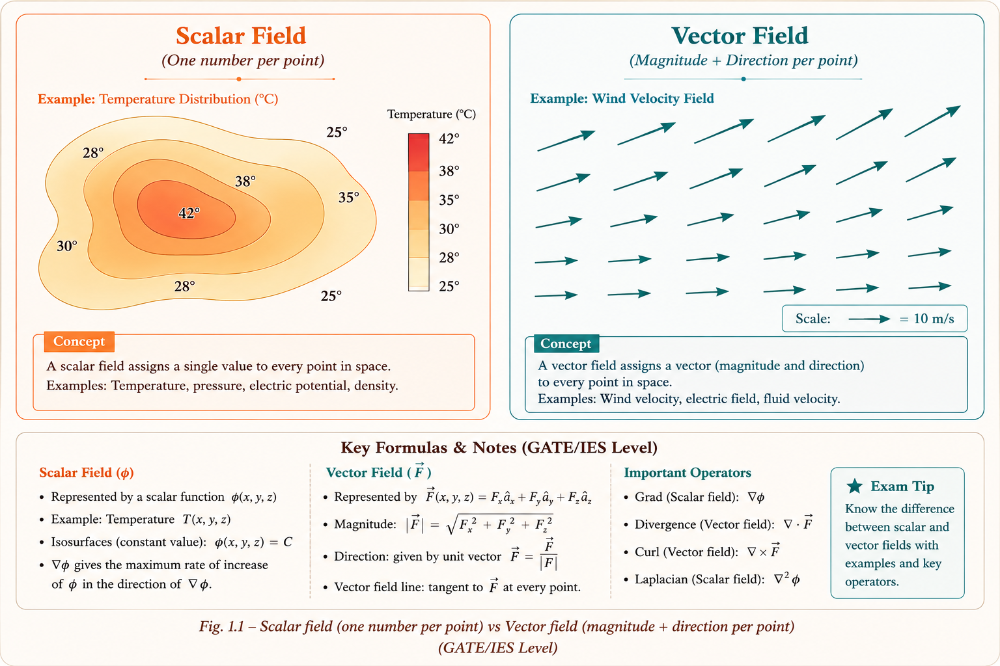
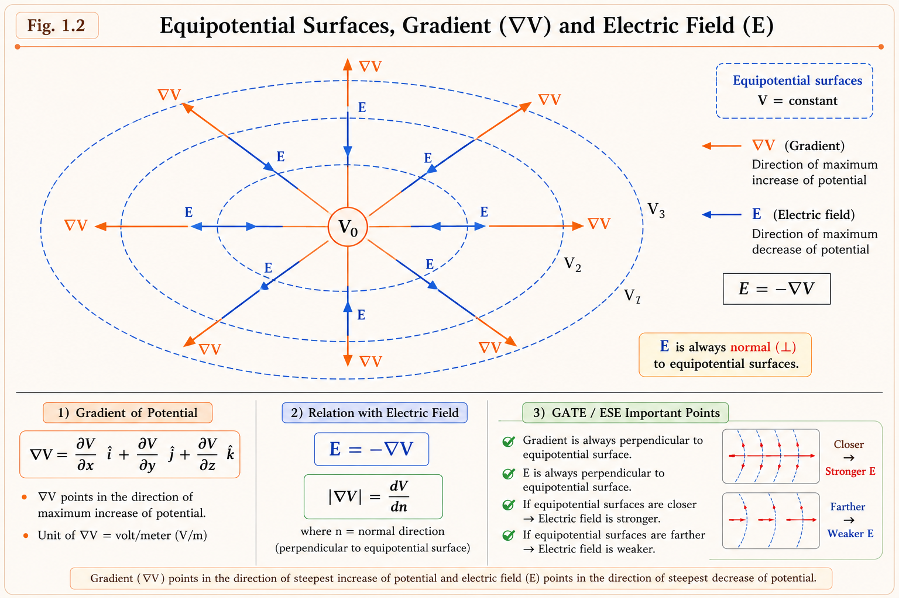
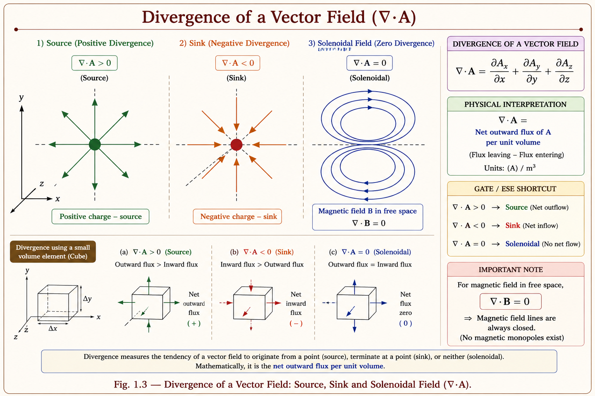
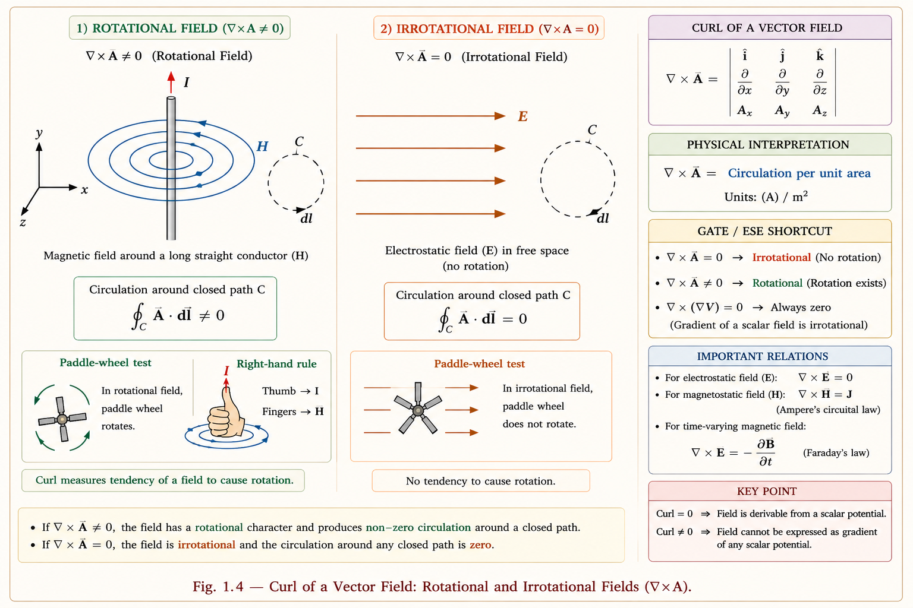
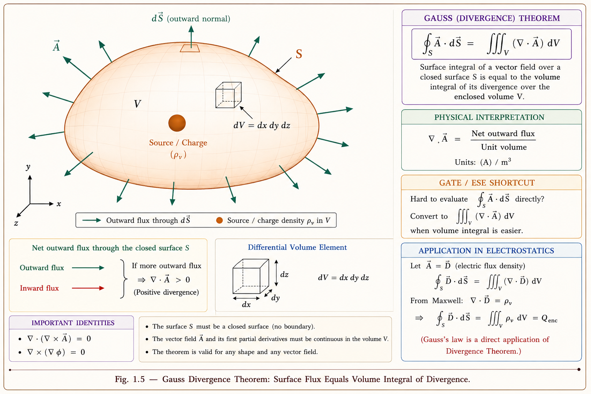
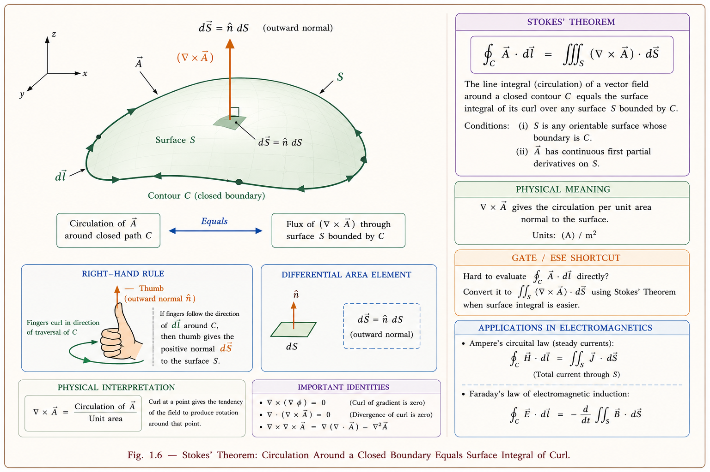
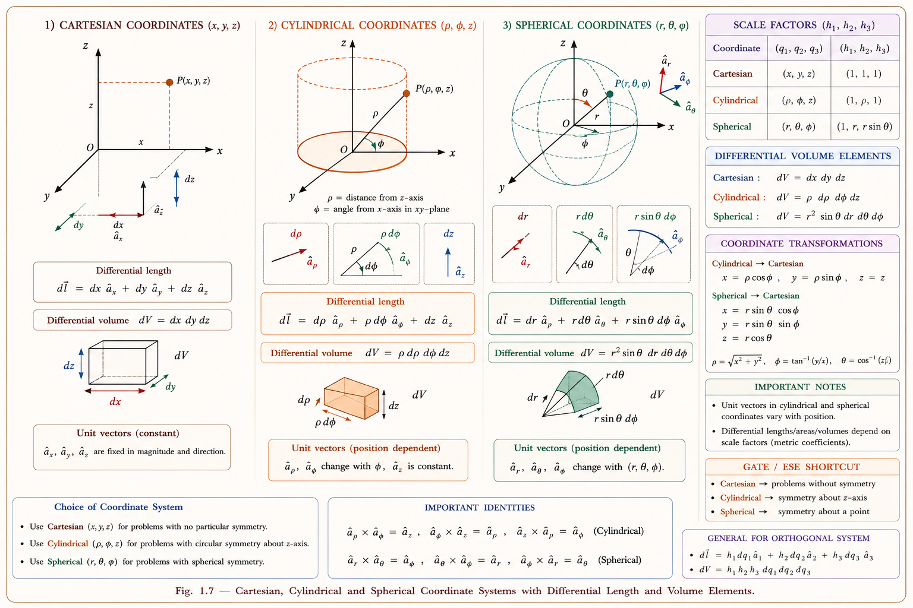

The mathematical language of all electromagnetic theory. Master scalars, vectors, gradient, divergence, curl, and the two pillars — Gauss's theorem and Stokes' theorem — with coordinate systems. Every Maxwell equation speaks this language.
All four Maxwell's equations are written using gradient, divergence, and curl. Without mastering vector calculus, you cannot even read the laws that govern electricity, magnetism, antennas, waveguides, and transmission lines. This chapter is the foundation of the entire subject.
Imagine you are designing an antenna for 5G communication. The radiation pattern, the near-field and far-field behaviour, the directivity — every calculation requires solving Maxwell's equations, and every Maxwell equation uses either divergence (∇·) or curl (∇×). The gradient tells you how quickly a field changes in space. These three operations, built on the del operator ∇, are the grammar of electromagnetism.[1]
In power systems, when you analyse the electric field between the conductors of a transmission line, you compute a gradient of potential. When you verify there are no free charges in free space, you compute the divergence of the electric field. When you check whether a magnetic field is conservative or rotational, you compute its curl. Every topic in this series connects back to the foundations built here.[2]
A scalar field associates a single real number with every point in space. Temperature in a room, pressure inside a fluid, and electric potential (voltage) are all scalar fields. You can write them as \(f(x, y, z)\) or \(\phi(x, y, z)\) — just a number at each point, no direction involved.
Intuition: Think of a weather map showing temperature across India. Each city has one number — say 38°C in Vijayawada. That number is a scalar. There is no direction to "38°C". This is exactly how the electric potential \(V\) behaves — one voltage value at every point in space.
A vector field associates a vector (magnitude + direction) with every point in space. The electric field \(\mathbf{E}\), magnetic field \(\mathbf{B}\), force field \(\mathbf{F}\), and fluid velocity field \(\mathbf{v}\) are all vector fields. At each point in space, there is both a strength and a direction.
Intuition: Imagine wind velocity across India on a weather map. Each city has an arrow — say Vijayawada: 20 km/h blowing from the southwest. The arrow has both magnitude and direction. The electric field \(\mathbf{E}\) works exactly like this: at every point in space, it has a specific strength (in V/m) pointing in a specific direction.

Fig. 1.1 — Scalar field (temperature: one number per point) vs Vector field (wind velocity: magnitude + direction per point)
Many students confuse "a vector" with "a vector field." A vector is a single arrow. A vector field is a function that gives a different arrow at every point in space — think millions of arrows filling all of 3D space.
The del operator (nabla, ∇) is the fundamental tool of vector calculus. It is a vector differential operator — not a number, not a function, but an operator that acts on fields. In Cartesian coordinates:[1]
The genius of ∇ is that the same symbol gives three completely different operations depending on how it is applied:
| Operation | Notation | Applied To | Result | Physical Meaning |
|---|---|---|---|---|
| Gradient | ∇f | Scalar field f | Vector field | Direction of steepest ascent |
| Divergence | ∇ · A | Vector field A | Scalar field | Source/sink strength at a point |
| Curl | ∇ × A | Vector field A | Vector field | Rotational tendency at a point |
| Laplacian | ∇²f | Scalar field f | Scalar field | ∇·(∇f) — used in wave eq. |
In 1D, d/dx tells you how fast a function changes with x. The del operator ∇ does the same thing in all three directions simultaneously. It captures spatial variation — how rapidly a field is changing, which direction it is flowing, and whether it is rotating — all using the same symbol with different operations.
Imagine you are standing on a hilly terrain. At your exact position, the gradient tells you two things: how steep the hill is, and which direction is the steepest uphill. That's it. The gradient of a scalar field is the direction and rate of fastest increase.
In electromagnetics: the electric field \(\mathbf{E}\) is the negative gradient of the electric potential \(V\). This makes physical sense — electric field lines point from high potential to low potential (downhill), so \(\mathbf{E} = -\nabla V\).[1]
The gradient of a scalar field \(f(x, y, z)\) in Cartesian coordinates is:
Each component is the partial derivative of \(f\) with respect to that coordinate. The result is a vector pointing in the direction of steepest increase of \(f\).
1. The gradient is always perpendicular to the equipotential surfaces (surfaces
of constant \(f\)).
2. The magnitude \(|\nabla f|\) equals the maximum rate of change of \(f\) per
unit distance.
3. The gradient in any direction \(\hat{a}_l\) is found by: \(\nabla f \cdot
\hat{a}_l = \frac{df}{dl}\) (directional derivative).
4. \(\mathbf{E} = -\nabla V\) — the electric field is the negative gradient of
potential.

Fig. 1.2 — Gradient vectors are always perpendicular to equipotential surfaces and point in the direction of steepest increase
Original diagram — Aarova AI
The electric field is \(\mathbf{E} = -\nabla V\), not \(+\nabla V\). The negative sign is crucial. \(\nabla V\) points toward increasing potential (uphill); \(\mathbf{E}\) points toward decreasing potential (downhill, i.e., from + to − charge). Forgetting the negative sign is a very common GATE error.
Imagine tiny paddle wheels inside a fluid. Divergence measures how much fluid is being created (source) or destroyed (sink) at each point. If more fluid flows out of a small volume than flows in, the divergence is positive (source). If more flows in than out, divergence is negative (sink). If the flow is balanced (no sources or sinks), divergence is zero.[2]
In electromagnetics: Gauss's law says \(\nabla \cdot \mathbf{E} = \rho_v / \varepsilon_0\). This tells us that the divergence of the electric field is non-zero only where there are free charges (sources/sinks of the field). In free space with no charges, \(\nabla \cdot \mathbf{E} = 0\) — the field lines neither start nor end.
The divergence takes a vector field \(\mathbf{A} = A_x\hat{a}_x + A_y\hat{a}_y + A_z\hat{a}_z\) and produces a scalar — the net outward flux per unit volume at a point.

Fig. 1.3 — Divergence: positive (source), negative (sink), zero (solenoidal). Magnetic field is always solenoidal: ∇·B = 0
| Equation | Meaning | Condition |
|---|---|---|
| \(\nabla \cdot \mathbf{E} = \rho_v/\varepsilon_0\) | Gauss's Law (electric) | E has sources only where charge exists |
| \(\nabla \cdot \mathbf{D} = \rho_v\) | Gauss's Law (displacement) | D diverges from free charges only |
| \(\nabla \cdot \mathbf{B} = 0\) | No magnetic monopoles | B is always solenoidal everywhere |
| \(\nabla \cdot \mathbf{J} = -\partial\rho_v/\partial t\) | Continuity equation | Charge conservation law |
Place a tiny paddle wheel in a river. If the water flow is the same everywhere, the paddle doesn't spin. But if water flows faster on one side than the other, the paddle spins. The curl measures this tendency to rotate at each point, and its direction (by the right-hand rule) is the axis of rotation.[1]
In electromagnetics: Faraday's law says \(\nabla \times \mathbf{E} = -\partial\mathbf{B}/\partial t\). A changing magnetic field creates a rotating (curling) electric field. Ampere's law says \(\nabla \times \mathbf{H} = \mathbf{J} + \partial\mathbf{D}/\partial t\). Electric current and changing electric flux create a rotating magnetic field. Curl is at the heart of electromagnetic induction.

Fig. 1.4 — Rotational field (∇×A ≠ 0, like magnetic field around a wire) vs irrotational field (∇×A = 0, like electrostatic field)
| Equation | Law | Physical Meaning |
|---|---|---|
| \(\nabla \times \mathbf{E} = -\partial\mathbf{B}/\partial t\) | Faraday's Law | Changing B creates curling E (induction) |
| \(\nabla \times \mathbf{H} = \mathbf{J} + \partial\mathbf{D}/\partial t\) | Ampere-Maxwell Law | Current & changing D create curling H |
| \(\nabla \times \mathbf{E} = 0\) | Electrostatics | Static E is conservative (irrotational) |
\(\nabla \times (\nabla f) = 0\) for any scalar field \(f\). This is a fundamental vector identity. Since \(\mathbf{E} = -\nabla V\) in electrostatics, it immediately follows that \(\nabla \times \mathbf{E} = 0\). This identity appears directly in GATE questions.
The divergence theorem says: instead of computing how much "stuff" is being created inside a volume (which would require a 3D integral), you can simply measure how much "stuff" passes through the surface enclosing that volume. The total outward flux through the surface equals the total source strength inside.[2]
Water analogy: If you want to know the total water being produced by all springs inside a lake, you don't need to find every spring individually. Just measure the total water flowing outward through the lake surface. Same total.
The left side is the closed surface integral (total flux outward through surface S). The right side is the volume integral of the divergence (total source strength in volume V). The theorem converts between the two.

Fig. 1.5 — Divergence Theorem: total outward flux through closed surface S = integral of divergence over enclosed volume V
Applying the divergence theorem to \(\nabla \cdot \mathbf{E} = \rho_v/\varepsilon_0\) gives the integral form of Gauss's law: \(\oint_S \mathbf{E} \cdot d\mathbf{S} = Q_{enc}/\varepsilon_0\). This is why we can find E from symmetric charge distributions by integrating over a Gaussian surface.
Stokes' theorem says: instead of computing the total rotation (curl) over an entire surface, you can measure the circulation around the boundary of that surface. The total curl integrated over a surface equals the line integral (circulation) around the edge of that surface.[1]
Paddle wheel analogy: To measure the total spin of fluid over an entire lake surface, instead of deploying millions of tiny paddle wheels, you can simply measure how much the current circulates around the shore of the lake.
The left side is the line integral (circulation) around closed contour C. The right side is the surface integral of curl over surface S bounded by C. Together with the divergence theorem, Stokes' theorem relates volume/surface/line integrals — and is the backbone of all integral forms of Maxwell's equations.

Fig. 1.6 — Stokes' Theorem: circulation around closed boundary C = surface integral of curl over surface S bounded by C
Applying Stokes' theorem to \(\nabla \times \mathbf{E} = -\partial\mathbf{B}/\partial t\) gives Faraday's law: \(\oint \mathbf{E} \cdot d\mathbf{l} = -d\Phi_B/dt\) (EMF = rate of change of flux). Similarly, Ampere's law \(\nabla \times \mathbf{H} = \mathbf{J}\) becomes \(\oint \mathbf{H} \cdot d\mathbf{l} = I_{enc}\).
| Theorem | Converts | Key Application |
|---|---|---|
| Divergence (Gauss's) | ∮S → ∫V | Gauss's law for E and B |
| Stokes' | ∮C → ∫S | Faraday's law, Ampere's law |
Physical problems often have symmetry. A conducting sphere has spherical symmetry; a long wire has cylindrical symmetry; a parallel plate capacitor has Cartesian symmetry. Choosing the right coordinate system makes the math much simpler — sometimes a 3D integral collapses to 1D. The three systems used in electromagnetics are Cartesian, Cylindrical, and Spherical.[2]

Fig. 1.7 — Three coordinate systems: Cartesian (x,y,z), Cylindrical (ρ,φ,z), Spherical (r,θ,φ) with unit vectors and differential lengths
| System | Variables | Unit Vectors | Best Used For | dV |
|---|---|---|---|---|
| Cartesian | x, y, z | â_x, â_y, â_z | Parallel plates, rectangular waveguides | dx dy dz |
| Cylindrical | ρ, φ, z | â_ρ, â_φ, â_z | Coaxial cables, long wires, cylinders | ρ dρ dφ dz |
| Spherical | r, θ, φ | â_r, â_θ, â_φ | Point charges, spheres, antennas | r² sinθ dr dθ dφ |
In Cartesian coordinates, â_x, â_y, â_z always point in fixed directions. But in cylindrical coordinates, â_ρ and â_φ change direction as φ changes. This means you CANNOT differentiate them as constants. This is why the divergence and curl formulas look more complicated in cylindrical/spherical coordinates.
These identities appear directly in GATE questions and are used constantly in deriving Maxwell's equations. Memorise them as patterns, not formulas.[3]
| # | Identity | Physical Meaning | GATE Relevance |
|---|---|---|---|
| 1 | \(\nabla \times (\nabla f) = 0\) | Curl of gradient is always zero | Electrostatic E is curl-free |
| 2 | \(\nabla \cdot (\nabla \times \mathbf{A}) = 0\) | Divergence of curl is always zero | Magnetic flux is divergence-free |
| 3 | \(\nabla \times (\nabla \times \mathbf{A}) = \nabla(\nabla \cdot \mathbf{A}) - \nabla^2\mathbf{A}\) | Double curl identity — BAC-CAB rule | Wave equation derivation |
| 4 | \(\nabla \cdot (f\mathbf{A}) = f(\nabla \cdot \mathbf{A}) + \mathbf{A} \cdot (\nabla f)\) | Product rule for divergence | Used in energy density derivations |
| 5 | \(\nabla \times (f\mathbf{A}) = f(\nabla \times \mathbf{A}) + (\nabla f) \times \mathbf{A}\) | Product rule for curl | Medium importance |
| 6 | \(\nabla \cdot (\mathbf{A} \times \mathbf{B}) = \mathbf{B} \cdot (\nabla \times \mathbf{A}) - \mathbf{A} \cdot (\nabla \times \mathbf{B})\) | Divergence of cross product | Poynting theorem derivation |
| 7 | \(\nabla^2 f = \nabla \cdot (\nabla f)\) | Laplacian = divergence of gradient | Laplace's & Poisson's equations |
Identity 1: \(\nabla \times (\nabla f) = \mathbf{0}\) — This immediately proves
that electrostatic E is conservative.
Identity 2: \(\nabla \cdot (\nabla \times \mathbf{A}) = 0\) — This immediately
proves that \(\nabla \cdot \mathbf{B} = 0\) when \(\mathbf{B} = \nabla \times \mathbf{A}\)
(magnetic vector potential).
The divergence of the vector field \(\mathbf{F} = x^2\hat{a}_x + y^2\hat{a}_y + z^2\hat{a}_z\) at the point (1, 1, 1) is:
\(\nabla \cdot \mathbf{F} = \frac{\partial}{\partial x}(x^2) + \frac{\partial}{\partial y}(y^2) + \frac{\partial}{\partial z}(z^2) = 2x + 2y + 2z\).
At (1,1,1): \(= 2(1) + 2(1) + 2(1) = 6\). Answer: (C)
If \(\mathbf{A} = (3y - z)\hat{a}_x + (x + 2z)\hat{a}_y\), then \(\nabla \times \mathbf{A}\) at the origin is:
With \(A_x = 3y-z\), \(A_y = x+2z\), \(A_z = 0\):
\(\hat{a}_x\) component: \(\frac{\partial A_z}{\partial y} - \frac{\partial A_y}{\partial z} = 0 - 2 = -2\)
\(\hat{a}_y\) component: \(\frac{\partial A_x}{\partial z} - \frac{\partial A_z}{\partial x} = -1 - 0 = -1\)
\(\hat{a}_z\) component: \(\frac{\partial A_y}{\partial x} - \frac{\partial A_x}{\partial y} = 1 - 3 = -2\)
So \(\nabla \times \mathbf{A} = -2\hat{a}_x - \hat{a}_y - 2\hat{a}_z\) at origin. Use the determinant method systematically to avoid sign errors.
The electric potential in free space is \(V = 2x^2 + 3y^2\) volts. The electric field \(\mathbf{E}\) at (1, 1, 0) is:
\(\mathbf{E} = -\nabla V = -\left(\frac{\partial V}{\partial x}\hat{a}_x + \frac{\partial V}{\partial y}\hat{a}_y\right) = -(4x\hat{a}_x + 6y\hat{a}_y)\)
At (1,1,0): \(\mathbf{E} = -4\hat{a}_x - 6\hat{a}_y\) V/m. Note the crucial negative sign. Answer: (B)
Which of the following is NOT a consequence of Stokes' theorem applied to Maxwell's equations?
Stokes' theorem converts line integrals to surface integrals of curl (∮_C → ∫_S). Option (C) is a closed surface integral of E·dS — this comes from the divergence theorem, not Stokes'. Gauss's law \(\oint \mathbf{E} \cdot d\mathbf{S} = Q/\varepsilon_0\) is derived from the divergence theorem applied to \(\nabla \cdot \mathbf{E} = \rho_v/\varepsilon_0\). Answer: (C)
For any scalar field \(f\), which of the following is always true?
The fundamental vector identity states \(\nabla \times (\nabla f) = \mathbf{0}\) identically for any scalar field \(f\) with continuous second-order partial derivatives. Note: (A) is wrong — \(\nabla \cdot (\nabla f) = \nabla^2 f\), which is the Laplacian and is NOT always zero. (D) is meaningless — curl operates on vector fields, not scalars. Answer: (B)
Part (a): Compute ∇f
At (2, −1, 1): \(\nabla f = (-1)^2\hat{a}_x + [2(2)(-1) + 1^3]\hat{a}_y + 3(-1)(1)^2\hat{a}_z = \hat{a}_x - 3\hat{a}_y - 3\hat{a}_z\)
Part (b): Unit vector of maximum increase
The gradient itself points in the direction of maximum increase. The unit vector is \(\hat{a}_N = \nabla f / |\nabla f|\).
Part (c): Directional derivative
The negative value means \(f\) decreases in this direction.
Method 1: Volume integral of divergence
Method 2: Surface integral over 6 faces
Only the faces where \(D_x\) or \(D_y\) change contribute. After evaluating all six faces (front/back in x: \(x=2\) gives \(\int_0^1\int_0^3 4y\,dy\,dz = 3\times 2=6\); \(x=0\) gives 0; all y-faces where \(A_y=x^2\) but same on both y=0 and y=1 cancel; z-faces have D_z=0), total surface integral = 6 C. Both methods agree. ✓
Using the cylindrical divergence formula with \(A_\rho = Q/(2\pi\rho)\), \(A_\phi = 0\), \(A_z = 0\):
Result: \(\nabla \cdot \mathbf{D} = 0\) for \(\rho \neq 0\). This confirms that there is no volume charge density except at the line \(\rho = 0\) where the line charge itself sits. This is a classic GATE-type result showing that an inverse-\(\rho\) field is source-free away from its source.
Gradient: You're hiking — the gradient points uphill, and its magnitude is the
slope. The steeper the hill, the bigger the gradient.
Divergence: Imagine tiny pipes. Positive divergence = water gushing out
(source). Negative = water sucking in (drain). Zero = balanced flow through.
Curl: Drop a tiny paddlewheel in a stream. Does it spin? Curl = the spin rate
and axis. Fast rotation = large curl.
\(\nabla f = \frac{\partial f}{\partial x}\hat{a}_x + \frac{\partial f}{\partial y}\hat{a}_y +
\frac{\partial f}{\partial z}\hat{a}_z\)
Points to max increase. \(\mathbf{E} = -\nabla V\).
⊥ to equipotentials.
\(\nabla \cdot \mathbf{A} = \partial A_x/\partial x + \partial A_y/\partial y + \partial
A_z/\partial z\)
Scalar result. Source(+) / Sink(−) / Solenoidal(0). \(\nabla \cdot
\mathbf{B} = 0\) always.
\(\nabla \times \mathbf{A}\) = determinant form. Vector result. Rotation at a point. \(\nabla \times \mathbf{E} = 0\) in statics. \(\nabla \times \mathbf{H} = \mathbf{J}\) (Ampere).
\(\oint_S \mathbf{A}\cdot d\mathbf{S} = \int_V(\nabla\cdot\mathbf{A})\,dv\)
Closed surface ↔
Volume. Gives Gauss's law in integral form.
\(\oint_C \mathbf{A}\cdot d\mathbf{l} = \int_S(\nabla\times\mathbf{A})\cdot
d\mathbf{S}\)
Closed line ↔ Open surface. Gives Faraday's & Ampere's laws.
\(\nabla\times(\nabla f)=\mathbf{0}\) ← always zero
\(\nabla\cdot(\nabla\times\mathbf{A})=0\)
← always zero
\(\nabla^2 f = \nabla\cdot(\nabla f)\) ← Laplacian
Cartesian (x,y,z): rectangular geometry.
Cylindrical (ρ,φ,z): wires, coaxial cables. dV =
ρdρdφdz.
Spherical (r,θ,φ): point charges. dV = r²sinθ dr dθ dφ.
\(\nabla\cdot\mathbf{D}=\rho_v\) |
\(\nabla\cdot\mathbf{B}=0\)
\(\nabla\times\mathbf{E}=-\partial\mathbf{B}/\partial
t\)
\(\nabla\times\mathbf{H}=\mathbf{J}+\partial\mathbf{D}/\partial t\)
Have a doubt about vector calculus, gradient, divergence, curl, or coordinate systems? Ask Aarova AI — your always-available GATE tutor.
All technical content is derived from the following standard textbooks. All explanations, derivations, diagrams and examples are original to Aarova AI.